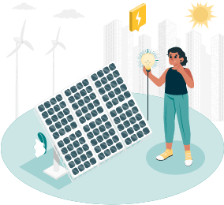

{% include "templates/includes/header.html" %}
{% include "templates/includes/navbar.html" %}
Solar off grid

The off-grid system is the easiest and simplest way to switch to solar. You do not need the
permission of KSEB or any other institution here. We can convert the electricity required for the
house completely or partially to solar. A kilowatt system costs an average of Rs. 55,000 and about
Rs. 30,000 for installation. In other words, a single kilowatt system costs around Rs 90,000, while a
five-kilowatt system costs less than Rs 3 lakh. This is the most suitable method if you are switching
to solar step by step. It is also a segment that is widely misunderstood in the country.
One kilowatt panel produces an average of 4.2 units of electricity per day. However, during the
rainy season, this output capacity is reduced by one-third, so when calculating the storage capacity
of the battery, Bhat it is one-third of the maximum panel capacity. Failure to charge properly will
damage the battery. In terms of life, the battery costs four times as much as the panel. Used
properly, tubular batteries can last up to seven years, but solar batteries last only up to five years. It
is caused by improper charging and over-discharge.
The size of the inverter determines how much of the equipment can be operated simultaneously. A
typical 5kVA inverter can meet all the needs of a medium-sized home. At the same time, changing
the use of appliances that can be operated at any time, such as washing machines, during the day
can maximize battery life.
One major misconception that occurs here is that the size of the inverter is generally stated in the
wrong parameter, making it appear as the total capacity of the system, and the calculations on the
panel and battery get tampered with. The price can only be calculated accurately if each of these is
taken into account.
Another misconception comes from the word hybrid. The battery in this system can also be
charged via KSEB if required. This is a way to save a lot of electricity and increase the bill. It can
be referred to as unidirectional hybrid and hybrid as it can be charged through KSEB. But this
adjective does not bring any significant benefits to the user.
Talk to our customer care executive
{% include "templates/includes/footer.html" %}
{% include "templates/includes/floatingbutton.html" %}